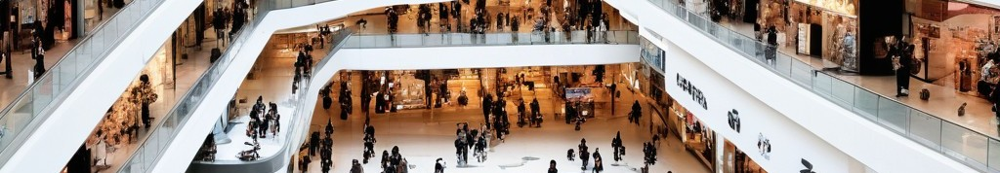

Back to List

What makes people love going to the mall?
Topic
October 15, 2024 Evelina Gomenyuk
Mall shopping makes me feel independent. Jasmine Williams agrees:
"My friends and I didn't have a huge allowance to buy whatever we wanted, but we didn't care. All that mattered was being able to hang out at the mall as often as we wanted." I like having money, too!
It is nice to not have my parents make my choices for me. Jasmine said, "We would take our time to explore different stores like Express — who finally added extended sizing to their clothes — and felt like we had free reign to window shop without hearing comments about what we could afford or not.
I even got my ears pierced twice at the mall." I do not think my parents would be happy if I came home with pierced ears!
Jasmine's post
It's easier to find everything in one place. Admin agrees:
“You're more than likely to find everything you want rather than going to separate stores.
The mall is a great place to meet new people.”
I would rather want to find everything at one place, rather than going to multiple stores.
Admins Post
Going to the mall can be a tradition for many people. Alicia said,“While the majority of Americans shop online, it looks like people are ready for a change and want to go back to the time when going to a mall was a frequent tradition with friends and family,”
Making a shopping mall tradition with friends can be fun.
Alicia's Post
Shopping malls are a chance for people to feel independent. Alexandra agrees:
“In Smith Maguire’s analysis, the mall represents the adult world. Children are taught how to navigate it by accompanying their parents (most often, their mothers) on shopping trips. It is a leap toward self-determination to go alone.”
Malls can teach you how to be independent.
Alaxandra's Post
It's easy to find everything you want in a mall. Adiv says, ”One thing we all love about the mall is that you usually find what you want. If you don’t want anything, then after some window-shopping you will find something you want.”
Even if you don't find what you want you can look for stuff you might want.
Adiv's Post
Things at the mall might inspire you. Karen says, “Malls were also a site of aspirational consumption. While I could occasionally buy clothes, records (on vinyl or cassette), food, or other goods, mostly the mall was the place of imagination of what I would buy if I could. My friends and I could try on clothes to see what styles were flattering for occasions we might someday need an outfit for. This was not just a way to pass the time, but to bond with friends.”
You can bond with friends while finding new things.
Karen's Post
It's more convenient to go to malls. Right Click Media agrees:
“People prefer going to shopping malls rather than standoff stores because they have a wide variety of products, malls have their own parking facility, and malls have game arcades and food courts.”
I would rather go to a mall than separate stores.
Right Click Media's Post
{kind=link}